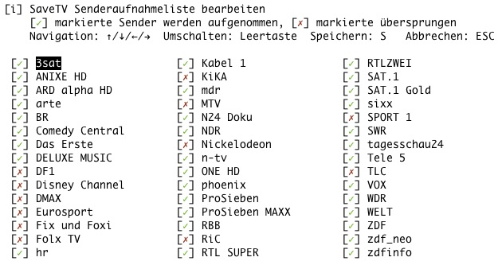

Einrichten und Starten
Username und Passwort
Erstes Login und manuelles Login
Die Accountdaten, der Save.TV Username und das Passwort, werden beim Skriptstart abgefragt und auf Wunsch für eine automatische Skriptausführung gespeichert.
./stvcatchall.sh
[i] Keine gespeicherten Logindaten vorhanden, bitte manuell eingeben
Save.TV Username: 612612
Save.TV Passwort: R2D2C3PO
[✓] Login bei SaveTV als User 612612 war erfolgreich!
Nach der Eingabe von Username und Passwort loggt sich das Skript mit diesen Daten bei Save.TV ein. Sind die eingegeben Daten nicht korrekt, kann die Eingabe direkt wiederholt werden.
[-] Login mit diesen Userdaten nicht möglich
Username und Passwort prüfen und Eingabe wiederholen
[i] Keine gespeicherten Logindaten vorhanden, bitte manuell eingeben
Save.TV Username:
Nur wenn die Daten korrekt sind, wird ein Abspeichern für das automatische Login angeboten.
Die Zugangsdaten können zum automatischen Login gespeichert werden
Zugangsdaten speichern? (J/N)? :
Speicheroptionen
Option 'U' - Umgebungsvariablen (Empfohlen)
Wird diese Option gewählt, speichert das Skript lediglich den Platzhalter ENV in der Datei stv_autologin. Die eigentlichen Zugangsdaten müssen manuell in den Umgebungsvariablen STV_USER und STV_PASS hinterlegt werden (z.B. in .bashrc oder .bash_profile).
Wichtig
Sind diese Variablen gesetzt, haben sie immer Vorrang, unabhängig vom Inhalt einer eventuell vorhandenen stv_autologin-Datei.
Option 'D' - Speicherung in Datei
Die Zugangsdaten werden in der Datei stv_autologin gespeichert.
Automatisches Login
Das Skript prüft beim Start zuerst, ob die Umgebungsvariablen STV_USER und STV_PASS gesetzt sind. Ist dies der Fall, werden sie verwendet. Andernfalls wird die Datei stv_autologin geprüft.
Wechsel zwischen den Loginoptionen
Um wieder zum manuellen Login zurückzukehren, muss die Datei stv_autologin gelöscht werden. Falls Umgebungsvariablen gesetzt sind, müssen diese ebenfalls entfernt werden. Am besten startet man das Skript danach mit der Funktionstestoption -t.
Sender von der Aufnahme ausschließen
Senderliste Editor
Der Editor lässt sich mit ./stvcatchall.sh -s bzw. ./stvcatchall.sh --sender direkt aufrufen.

Der Editor listet alle verfügbaren Sender auf. Mit den Pfeiltasten und der Leertaste lassen sich Sender aus- oder einschließen. * S: Speichern * ESC: Abbrechen ohne Speichern
Die Anzeige der aktuell ausgeschlossenen Sender ist auch Teil des Funktionstests (-t).